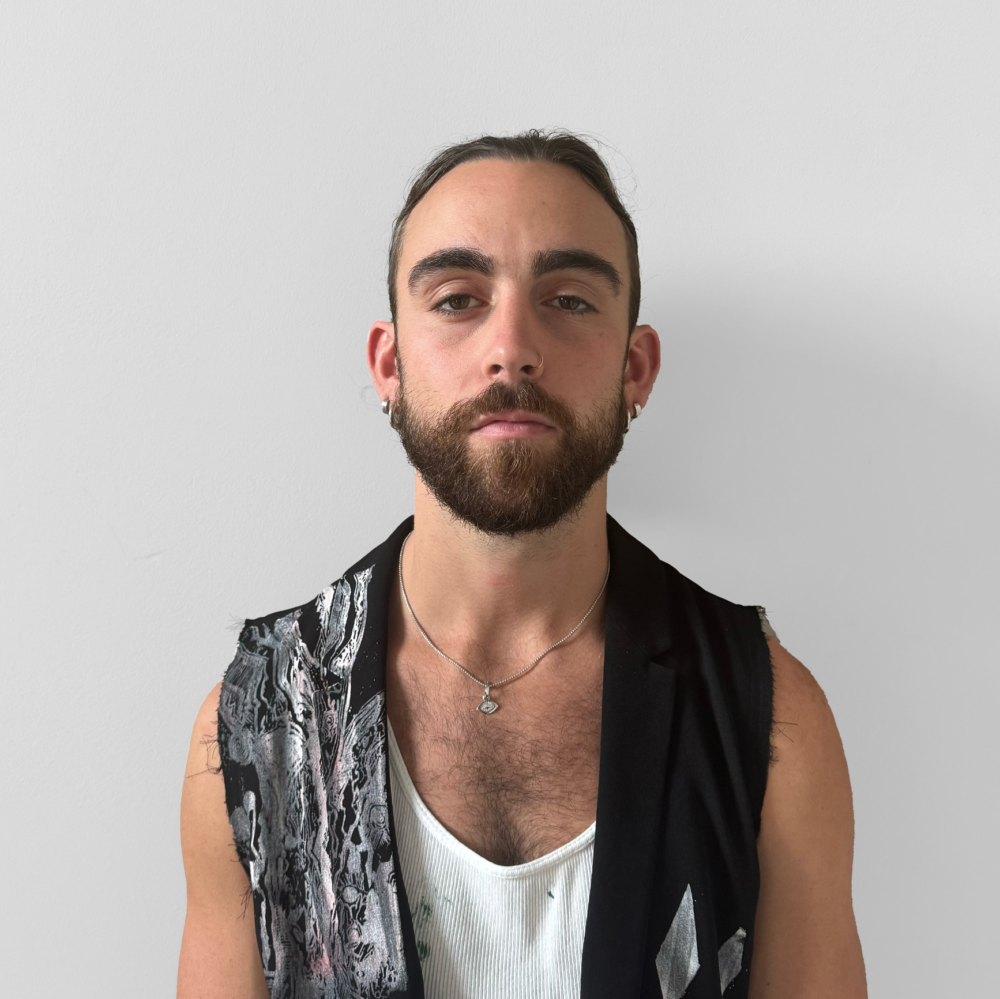

Scott Kuffner
Artista
Scott Kuffner è un pittore, disegnatore e artista grafico americano che attualmente vive a Firenze, in Italia. Studia all'Istituto Lorenzo de' Medici, dove sta conseguendo una laurea in Belle Arti con il supporto della School of the Art Institute of Chicago.
Lavorando con mezzi espressivi quali pittura a olio, punta d'argento, serigrafia, incisione e carboncino, Kuffner parte da una riflessione sulla storia dell'arte. In precedenza ha lavorato nel settore della moda, fondando il proprio marchio Human Error, dove ha serigrafato le sue opere bidimensionali su capi di abbigliamento e materiali di recupero, combinando l'abbigliamento streetwear contemporaneo con le belle arti.
Il suo lavoro recente trae ispirazione dall'arte italiana del Novecento, come anche del Rinascimento, Modernismo e gli stili dei Miserabilisti. Il dialogo tra questi periodi influenza la sua esplorazione delle questioni sociali contemporanee, tra cui il consumismo, il ritorno alla figurazione e le immagini malinconiche associate alla guerra e all'estremismo politico.
Il lavoro di Kuffner mira a bilanciare la disciplina formale con la libertà espressiva, creando un ponte tra il rispetto storico e il caos moderno.